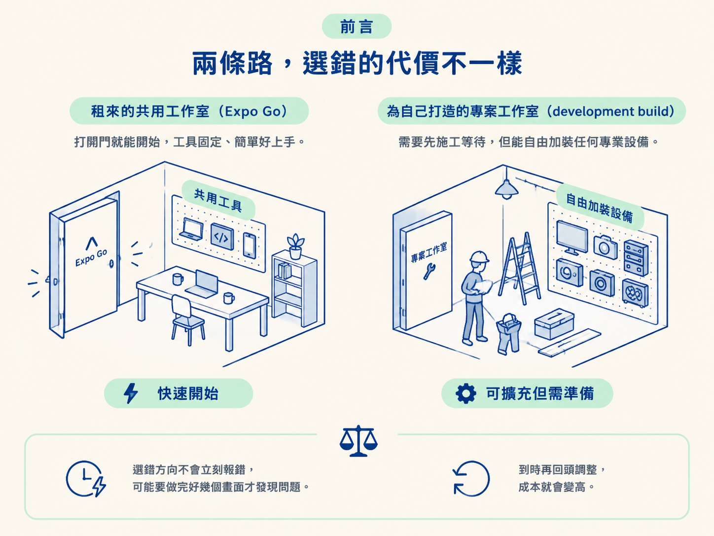
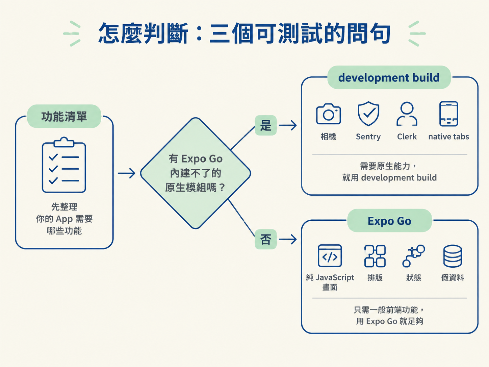

動手做之前，先判斷你的 app 適合使用 Expo Go，還是需要建立 development build。判斷的核心只有一件事：app 是否用到了 Expo Go 內建不了的 native module。
上一節我們看過 Expo 的工具鏈，也知道 Expo Go 只是其中一個練習容器。現在問題來了：你的 app 到底該用 Expo Go，還是該建立一個 development build？
這裡無關哪個工具比較好，重點是你選哪一種取捨。Expo Go 快、免費，幾乎不需要設定，掃描 QR code 就能看到畫面；development build 則需要等待第一次建置，也會產生原生專案，但能安裝原生模組，測試結果也更接近真正上架後的 app。
可以把它想成兩條路：Expo Go 像是租來的共用工作室，打開門就能開始；development build 則像是替自己的專案打造工作室，準備時間較長，但需要什麼設備都能裝。麻煩的是，選錯方向通常不會立刻報錯。你可能已經做完好幾個畫面，才發現某個功能根本無法執行，這時再回頭調整，成本就高了。

| 面向 | Expo Go | development build |
|---|---|---|
| 它是什麼 | Expo 提供的通用 app，掃描 QR code 就能執行 | 為你的專案量身建置的 standalone app |
| 怎麼取得 | 在手機安裝 Expo Go，執行 expo start | 安裝 expo-dev-client，再執行 npx expo run ios |
| 能安裝原生模組嗎？ | 不行，只能使用 Expo Go 內建的模組 | 可以安裝任何 native module |
| 速度 | 快，修改 JS 後幾乎能即時看到結果 | 第一次建置較慢，之後只修改 JS 時同樣很快 |
| 適合什麼 | 學習、測試，以及純 JavaScript 的 demo | 準備上架的真實專案，以及需要原生能力的功能 |
課程裡的說法很直接：Expo Go 適合測試與學習；要做真正的應用程式時，就會開始需要 development build。原因是 Expo Go 不可能預先內建所有功能，有些 native module 就是無法在裡面執行。
所以兩者的分界跟「簡單」或「困難」無關，關鍵是你的 app 是否需要跨過 JS 與 native 之間的界線。
不用背一長串情境。開始動工前，先問自己三個問題：
這三個問題最後都指向同一個判準：功能清單裡，有沒有 Expo Go 內建不了的原生能力？如果有，就別把 development build 當成可有可無的選項，你非得採用它不可。

不過，「一定要使用 development build」也不代表所有專案從第一天就非得建置它。以下幾種情況會讓判斷稍微不同。
第一種是目前還沒有要使用原生功能。課程本身就是先在 Expo Go 裡執行，等到需要 native module 時，再轉到 development build。也就是說，準備上架的專案不一定要從第一天就使用 dev build；真正的轉換時機，是你第一次需要原生能力的時候。如果你打算先慢慢完成畫面，使用 Expo Go 來跑純畫面是合理的。
第二種是明明安裝了模組，功能卻沒有生效。這是很常見的誤判：你以為安裝套件後重新載入就可以，結果畫面仍然報錯。原因是新增 native module 改變了 app binary 的組成，而純 JavaScript 的熱更新不會把新的原生碼帶進現有的 app。你必須重新建置。
這個規則不是 Expo Go 才有，dev build 專案也一樣要遵守。下一節會進一步拆解這個機制。
第三種是在模擬器裡無法完整測試。例如相機功能，模擬器通常沒有真實硬體可以使用。因此，即使你已經採用 development build，也要記得某些功能必須在真機上驗證才準確。這不會改變你該選哪個環境，但會影響你之後如何驗收功能。
判準只有一條：功能清單裡只要出現一個 Expo Go 內建不了的 native module，就必須使用 development build；如果目前全是純 JavaScript 畫面，先用 Expo Go 起步最快。真正容易踩到的陷阱，是新增 native module 後忘了重建，誤以為熱更新會自動把它帶進 app。
現在留下的問題是：為什麼新增 native module 後一定要重建？Expo 沒有額外訂下這條規矩，它是 JS 與 native 分層後自然產生的結果。下一節會把這個機制拆開，讓你看懂重建到底重建了什麼，也知道哪些修改只靠熱更新就能完成。